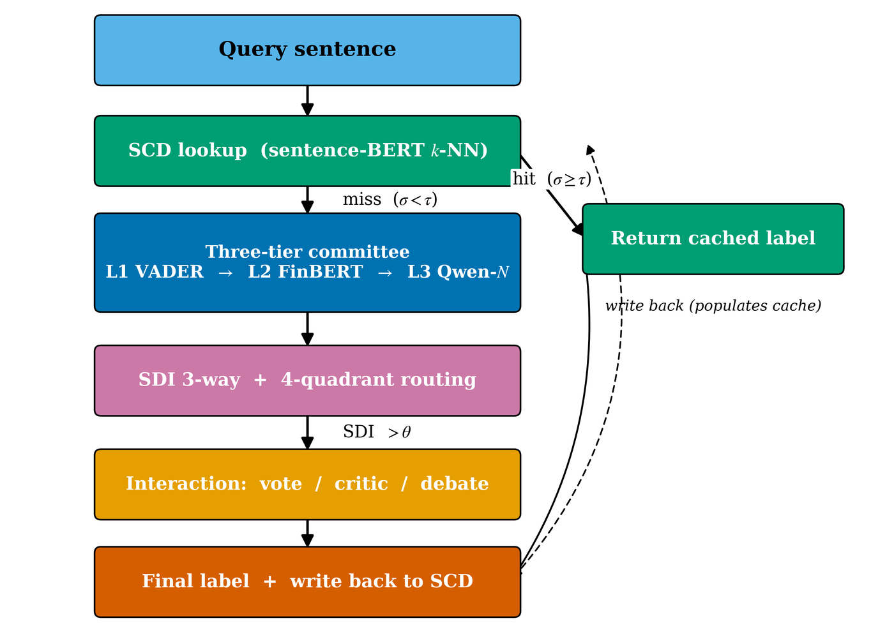

TriAgent
A divergence-aware multi-agent routing framework that cuts large language model inference cost by 10–100× — by sending each query to the cheapest model tier that can answer it correctly.
The Overlake School · Edwards Vacuum Inc. · The University of Memphis
The idea in one paragraph
Production LLM pipelines share a structural cost trap: the reasoner LLM dominates the per-query bill, yet most queries are trivially handled by models that cost a thousandth as much. TriAgent runs three agents stratified by contextual granularity — a word-level lexicon, a sentence-level domain transformer, and a cross-sentence LLM reasoner — chosen so their failure modes are orthogonal by construction. The pairwise disagreement between them, the Semantic Divergence Index (SDI), is then used for three things at once: deciding which tier answers the query, keying a multilingual semantic cache, and flagging likely LLM hallucinations. None of it requires a learned router or labelled routing data.
Five results
| Finding | Result |
|---|---|
| Critic plateau | A 1.5B model used as a critic over two cheap agents reaches F1 = 0.87, matching 3B and 7B (overlapping bootstrap 95% CIs). A same-size 3-persona vote collapses to F1 = 0.66. |
| Cost at scale | At 10M users × 10 queries/day: always-GPT-4 $365M/yr, always-GPT-4o-mini $11M/yr, TriAgent $1.65M/yr. |
| Multilingual cache | 95% of Chinese queries answered from an English cache at F1 = 0.99. |
| Free trust signal | The same SDI predicts “the LLM is wrong” at AUC = 0.90, with no extra models, labels, or training. |
| Back-test | SDI single-stage routing reaches Sharpe = 3.50 on 20 tickers, against always-FinBERT 1.36 and always-LLM 0.11. |
How it works

Three tiers, stratified by granularity
- L1 — word-level lexicon (VADER). ~0.03 ms, effectively $0.
- L2 — sentence-level domain transformer (FinBERT, 110M params). ~1.5 ms, ~$0.0005/1k.
- L3 — cross-sentence reasoner (Qwen2.5 / Mistral-7B / Phi-3.5-mini). 100s of ms, ~$0.11/1k.
Each tier consumes a strictly larger context window than the previous, so the errors they can commit are structurally different. Measured pairwise Cohen’s κ is 0.19–0.61; pairwise Jaccard error overlap is only 0.13–0.15.
The Semantic Divergence Index
SDI_LE = |s_V − s_F| lexicon vs. encoder
SDI_LR = |s_V − s_L| lexicon vs. reasoner
SDI_ER = |s_F − s_L| encoder vs. reasoner ← the trust signalThresholding (SDI_LE, SDI_ER) partitions queries into four quadrants, each with its own routing rule. Thresholds come from a grid search on a 20% validation split; the sweep is monotone, so any pair inside [0.2, 0.4] × [0.6, 0.8] is Pareto-comparable within 0.4 points.
The counter-intuitive quadrant. When FinBERT’s and Qwen-7B’s scores differ by more than 0.7 — 15.9% of Financial PhraseBank — Qwen-7B is right only 28% of the time, below chance for a three-way task, while stating a mean confidence of 0.93. FinBERT is right on 71% of the same rows. A confidence threshold on the LLM would not catch this; the divergence does.
Why a 1.5B critic matches a 7B critic
| Protocol | Qwen-1.5B | Qwen-3B | Qwen-7B | Mistral-7B |
|---|---|---|---|---|
| LLM alone | 0.69 | 0.62 | 0.81 | 0.70 |
| critic | 0.87 | 0.87 | 0.86 | 0.79 |
| debate | 0.69 | 0.81 | 0.87 | 0.82 |
The critic is not solving the task from scratch — it is adjudicating between two structured opinions from agents that fail in different places. Adjudication is an easier problem than classification, and a small model can do it. critic@1.5B costs $0.04 per 1k queries; critic@7B costs $0.11 — three times the price for the same F1.
The negative control identifies the mechanism. Three personas of the same Qwen-1.5B voting together reach F1 = 0.66, below the 0.69 a single instance achieves alone. Multi-agent voting per se does not produce the plateau; granularity-stratified diversity does.
Where it fails
Stated plainly, because the boundary is part of the contribution.
| Testbed | FinBERT F1 | ECE | critic@1.5B | Verdict |
|---|---|---|---|---|
| FPB (curated news) | 0.88 | 0.016 | 0.87 | plateau holds |
| TFNS (informal tweets) | 0.66 | — | 0.66 | plateau fails — below LLM-alone (0.76) |
The plateau is calibration-conditional. When the mid-tier specialist is miscalibrated, the critic scaffolding actively hurts. The deployable rule is to run a one-shot critic-versus-LLM-alone check before committing. Two further limits: the plateau height is family-specific (Mistral-7B tops out at 0.79), and SDI is a weak adversarial detector (AUC ≈ 0.5 on synonym swaps, numeric flips, and typos) even though it is a strong hallucination detector.
Frequently asked questions
- Does TriAgent only work for financial sentiment analysis?
- The architecture is task-agnostic — the router applies to any pipeline where a cheap specialist and a reasoner LLM co-exist, including dense-retrieval re-rankers, entity linkers, intent classifiers, and RAG re-readers. The empirical findings are validated on two financial testbeds and must be re-checked per task with the one-shot recipe in the paper.
- Do I have to use VADER and FinBERT?
- No. They are reference instances for financial sentiment, chosen because they are the canonical open baselines in their tier. Any cheap/mid/expensive triple works.
- Is this a learned router?
- No, and that is the point. SDI is arithmetic over tier outputs. FrugalGPT-style cascades need labelled examples and RouteLLM needs preference data; TriAgent needs neither.
- How does the trust signal compare to SelfCheckGPT?
- SelfCheckGPT re-samples the same model n times, so detection cost scales with samples. SDI compares against a different model the pipeline already ran, so the marginal cost is zero. Only the cross-granularity pairing carries the signal: SDIER reaches AUC 0.898, while SDILE manages 0.620 and SDILR only 0.575.
- Why does the cache work across languages?
- Because the key is a multilingual sentence embedding, not a string. At τ = 0.70, 95% of Chinese queries match English entries at F1 = 0.99 — a new Chinese deployment inherits canonical answers without running a Chinese committee.
Extended answers: FAQ · term definitions: Glossary · every number: Results · related work: Comparison.
Deep dives
Get the code
git clone https://github.com/graphuofm/TRIAGENT
cd TRIAGENT
python -m venv venv && source venv/bin/activate
pip install -r requirements.txtEvery reported number is reproducible from the experiments/L1–L9 scripts. End-to-end wall-clock is 6–8 hours on a single NVIDIA RTX A5000 (24 GB).
Publications
| Venue | Title | Status |
|---|---|---|
| CIKM 2026 Rome, Nov 7–11 |
TriAgent: Granularity-Stratified Multi-Agent Routing with a Multilingual Semantic Cache and a Free Trust Signal for LLM Inference Pipelines | Accepted — 10.1145/3799682.3839978 |
| FinLLM @ IJCAI 2026 Bremen |
TriAgent: Divergence-Aware Multi-Agent Committees for Cost-Efficient and Privacy-Preserving Financial Sentiment Analysis | 🏆 Long Oral Paper Award |
| arXiv | TriAgent: Divergence-Aware Multi-Agent Committees for Cost-Efficient Financial Sentiment Analysis | arXiv:2607.19794 |
Cite
@inproceedings{xu2026triagent,
title = {TriAgent: Granularity-Stratified Multi-Agent Routing with a
Multilingual Semantic Cache and a Free Trust Signal for
{LLM} Inference Pipelines},
author = {Xu, Isabel and Xu, Cynthia and Ren, Rachel and
Guo, Cong and Ding, Jiacheng},
booktitle = {Proceedings of the 35th ACM International Conference on
Information and Knowledge Management (CIKM '26)},
year = {2026},
address = {Rome, Italy},
publisher = {ACM},
doi = {10.1145/3799682.3839978},
}